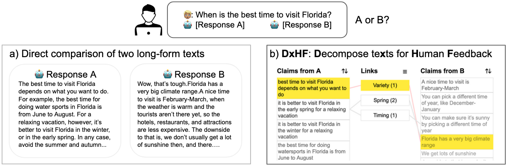

Human preferences are widely used to align large language models (LLMs) through methods such as reinforcement learning from human feedback (RLHF). However, the current user interfaces require annotators to compare text paragraphs, which is cognitively challenging when the texts are long or unfamiliar. This paper contributes by studying the decomposition principle as an approach to improving the quality of human feedback for LLM alignment. This approach breaks down the text into individual claims instead of directly comparing two long-form text responses. Based on the principle, we build a novel user interface DxHF. It enhances the comparison process by showing decomposed claims, visually encoding the relevance of claims to the conversation and linking similar claims. This allows users to skim through key information and identify differences for better and quicker judgment. Our technical evaluation shows evidence that decomposition generally improves feedback accuracy regarding the ground truth, particularly for users with uncertainty. A crowdsourcing study with 160 participants indicates that using DxHF improves feedback accuracy by an average of 5%, although it increases the average feedback time by 18 seconds. Notably, accuracy is significantly higher in situations where users have less certainty. The finding of the study highlights the potential of HCI as an effective method for improving human-AI alignment.
